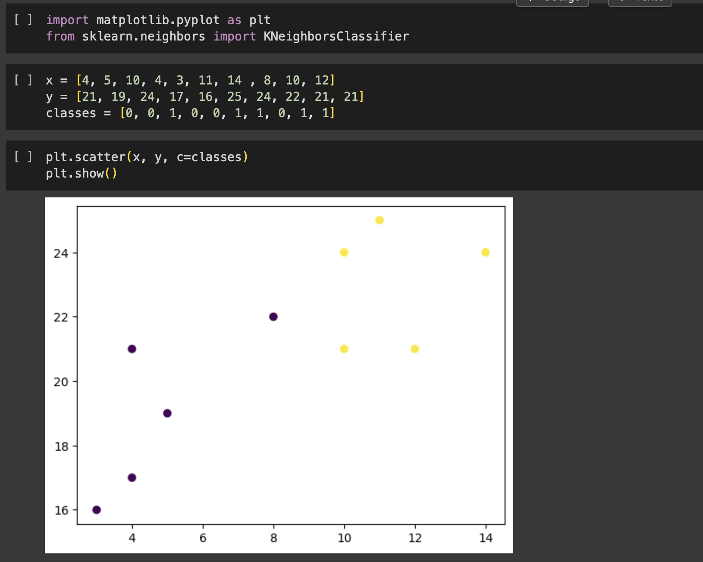
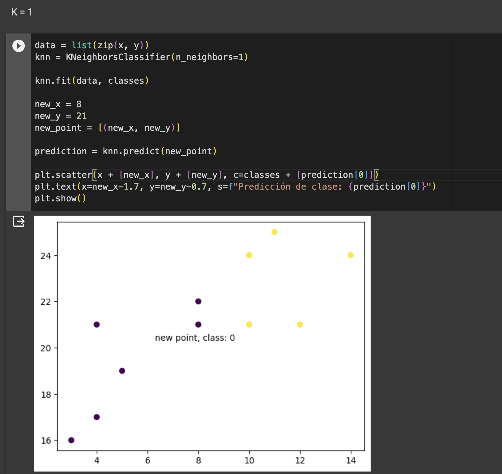
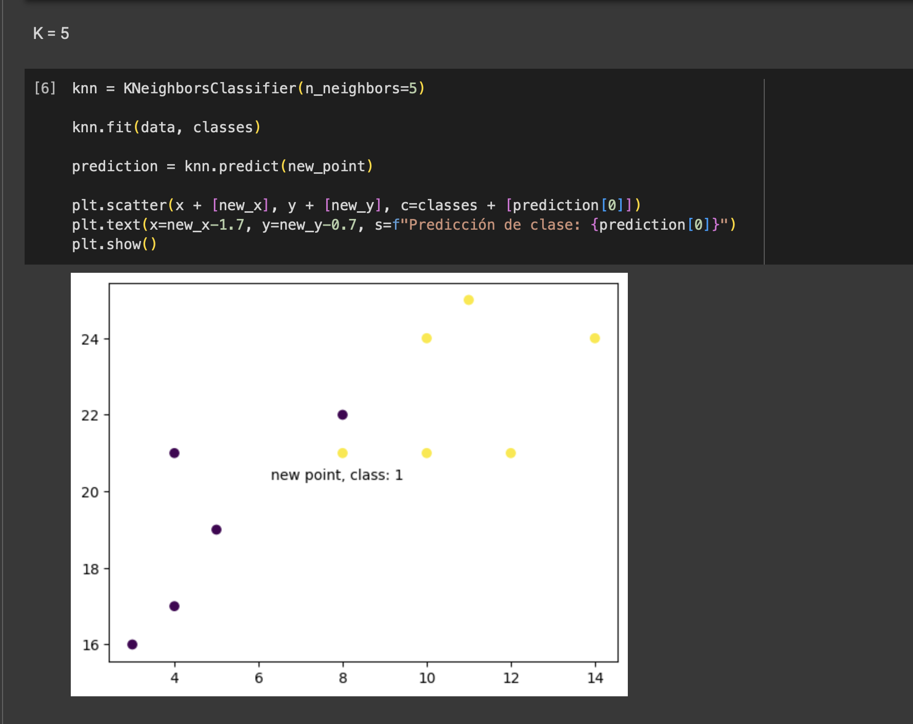

¿Qué es KNN?
KNN es un algoritmo de aprendizaje automático supervisado y sencillo que se puede utilizar para tareas de clasificación o regresión, y también se usa con frecuencia en la imputación de valores faltantes. Se basa en la idea de que las observaciones más cercanas a un punto de datos dado son las observaciones más "similares" en un conjunto de datos, y por lo tanto, podemos clasificar puntos no previstos en función de los valores de los puntos existentes más cercanos. Al elegir K, el usuario puede seleccionar la cantidad de observaciones cercanas a utilizar en el algoritmo.
Implementación
Se importan las librerias necesarias para el funcionamiento del algoritmo knn. Luego se asigna el DataSet dummy que se va a utilizar para la implementación.
El gráfico de puntos muestra la distribución de los datos en el DataSet, en este caso al tener dos únicos atributos, se muestra en un plano cartesiano.
K = 1
En el siguiente código, se crean los datos a entrenar, con la función zip que convina los pares de coordenadas x con y, y se crea el modelo de entrenamiento con la función. Se crea un clasificador knn con parámetro igual a 1, en este caso solo considerará el vecino más cercano para clasificar los datos. Se crea el nuevo punto en forma de tupla y se llama a la función predict para predecir el caso.
K = 5
Se realiza el mismo proceso pero para K = 5, lo que resulta en la siguiente gráfica. En este caso se toman los 5 vecinos más cercanos y votan por sus propias clases.
Conclusión
KNN es simple y efectivo, se utiliza para clasificar elementos en función de la proximidad de sus vecinos más cercanos. KNN es adecuado para problemas de clasificación, con un dataset pequeño o mediano ya que el tiempo de calculo es muy alto. KNN puede manejar atributos númericos o categóricos. Este algoritmo funciona bien principalmente cuando hay un número limitado de clases en el problema de clasificación.
Bibliografía
Clasificador KNN | Machine Learning | Aprendizaje Automático | Python - víctor Romero (Click para ir al enlace)
¿Qué es KNN? - IBM (Click para ir al enlace)